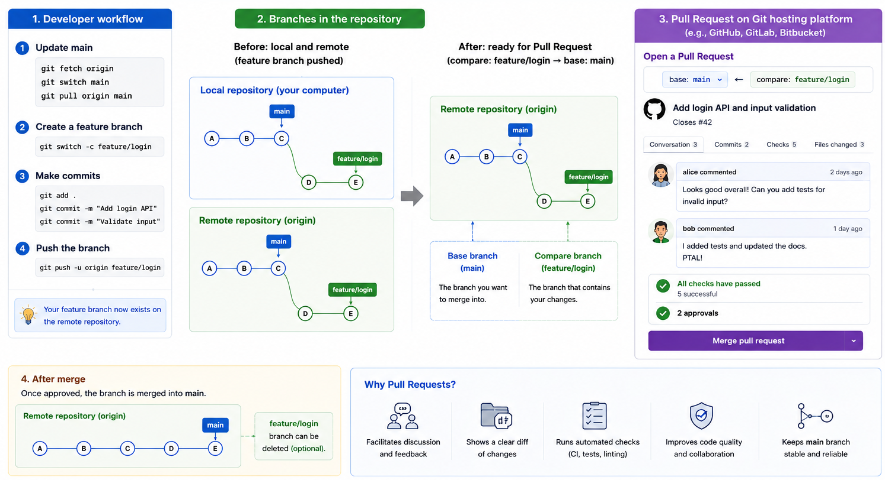

Once you understand remotes and upstream tracking, the next step is to see how teams actually organise their work from day to day.
Before layering branches or any review process on top, it is worth being fluent in the plain mechanics: getting a copy of a shared project, sending your work up to it, and taking other people's work down. Everything later in this section is a refinement of the two sequences below.
The simplest case: clone, commit, push. Imagine you and one teammate share a small project and both work straight on main.
$ git clone <repo-url>
$ cd <repo-name>
# edit files, stage, and commit locally — exactly as in Week 4
$ git push # publish those commitsLine by line, paying attention to where things exist at each step:
git clone in Week 4, but notice how much it configures on your behalf: a remote named origin pointing at that URL, a local branch main, and the remote-tracking branch origin/main beside it.git push needs no arguments here because clone already set origin/main as the upstream of your main. Git therefore knows which remote and which branch you mean.Taking in your teammate's work: the pull–work–push loop.
$ git pull # take in what your teammates pushed
# edit, stage, and commit as usual
$ git push # send your commits uppull. Git will force the issue eventually — as the third point below explains, it refuses a push while the remote holds commits you do not have. Pulling first is simply cheaper than pulling last, because you reconcile your teammate's changes before building new work on top of an outdated starting point.push only sends commits. Edits sitting in your working tree, or changes you have staged but not committed, go nowhere. If git status still lists them, pushing will not carry them to the remote.git pull to bring their commits in, sort out anything that overlaps, then push.That last point causes more confusion than anything else when people first share a repository, so it is worth restating plainly: a rejected push is not an error in your work — it is Git refusing to discard someone else's.
Publishing a branch of your own. Both sequences so far committed straight to main, which is workable for two people on a small project but not much beyond that. In most team projects, people do not commit directly to the shared main branch. Instead, they create a branch for one piece of work, commit to that branch locally, publish it with git push, and have the work reviewed before it is merged into main. Branches are used to isolate development work without affecting other branches — Week 4 already gave you that much. What is new here is the review step: the mechanism a team uses to decide whether a branch is ready to be merged at all, which is the subject of the rest of this section.
A common branch-based workflow looks like this: a developer first brings their local main up to date — a fetch alone would not do it, since fetching leaves main where it was — then creates a feature branch from it, makes focused commits, and pushes that feature branch to the remote repository. At that point, the branch becomes visible to other collaborators and to hosting platforms such as GitHub. Because the change lives on its own branch, it can be discussed, compared, reviewed, and even revised repeatedly without disturbing the main branch.
The same workflow written out as commands:
$ git switch main
$ git pull # bring local main up to date first
$ git switch -c feature-parser # branch from that up-to-date main
# edit files, stage, and commit locally
$ git push -u origin feature-parsergit switch main and git pull are the "brings their local main up to date" step above. Doing this before branching is what stops the new branch from starting out already missing commits the remote has.git switch -c feature-parser creates the branch on your machine only. Nobody else can see it, and the remote holds no record of it — which is precisely what makes a branch a safe place to work.git push -u origin feature-parser is what finally publishes it. Here the remote and branch have to be named, because a brand-new local branch has no upstream yet: there is no origin/feature-parser for Git to assume.-u is for. It records origin/feature-parser as the branch's upstream, so from the second push onwards a bare git push or git pull works on this branch, just as it does on main.This is where pull requests (PR) enter the picture. A pull request is not a core Git object stored in the repository itself — it is a collaboration feature offered by platforms such as GitHub that lets people discuss and review changes before merging them. Pull requests compare the changes made on your feature branch (the compare branch) against the branch you want to merge into (the base branch) — these are literally labelled "compare" and "base" in GitHub's own interface. In other words, a pull request is the review-oriented layer built on top of Git's underlying branch model: Git handles the branches and commits, and the hosting platform presents those changes as a reviewable proposal.

git fetch origin shown before git pull origin main is not necessary, because git pull performs a fetch itself.)A good way to understand the relationship between branches and pull requests is that the branch is the technical unit of isolated work, and the pull request is the social and review unit built around that branch. Inside a pull request, reviewers can inspect commits, changed files, and the diff between the base and compare branches. The review interface becomes a place where collaborators discuss what the change does, point out issues, request revisions, and decide whether the proposal is ready to merge.
Maintaining a coherent history in this process requires discipline. Branches should generally correspond to focused tasks rather than to large mixed bundles of unrelated work. Commits on those branches should be meaningful and reviewable rather than arbitrary snapshots of everything that changed that day. Pull requests also benefit from being reasonably small, because smaller diffs are easier to inspect carefully and discuss.
Putting that together, a minimal pull-request cycle is the branch workflow you have already seen, with one change at the end: instead of merging the branch yourself, you open a pull request and let review decide.
$ git switch main
$ git pull # start from an up-to-date main
$ git switch -c feature-readme
# edit, add, commit
$ git push -u origin feature-readme
# open a pull request on the hosting platformOne detail worth noting about that second line: git pull already performs a fetch, so there is never any need to run git fetch immediately before it.
After this point, the workflow often alternates between review and revision: reviewers comment, the author updates the branch with more commits, and the pull request automatically updates because it is tied to the branch. Review is not a single event but an iterative process.
One distinction is worth being precise about, because it is easy to lose sight of once this cycle becomes routine: a pull request is not part of Git. There is no git pull-request command, and nothing about a pull request is stored in your repository — clone the project on another machine and you will find the branches and the commits, but no pull requests. It is a feature of the hosting platform. GitHub and GitLab both provide one, and they do not even agree on the name: what GitHub calls a pull request, GitLab calls a merge request. Underneath, both are doing the ordinary Git you already know — comparing two branches, and eventually merging one into the other. When you open one, the platform asks you to specify:
main.feature-parser. The platform computes the diff between the two for you, so you do not state what changed; the branches determine that.Review takes time, and main rarely stands still while it happens. The longer your branch goes without main's newer commits, the more likely the pull request is to report conflicts that have nothing to do with the change you are proposing. The habit that prevents this is to bring those commits into your branch periodically, rather than all at once at the end:
$ git switch main
$ git pull
$ git switch feature-readme
$ git merge main # resolve any conflicts now, while they are small
$ git pushMerging main into your branch like this is one of two ways to stay current; Section 5.4 introduces the other, which brings the same new commits in without recording a merge commit. Both keep the branch up to date and differ only in the history they leave behind, and teams usually settle on one convention.
FIT2109 · Week 5 · Monash University · by Dr. Zahra Mirzamomen